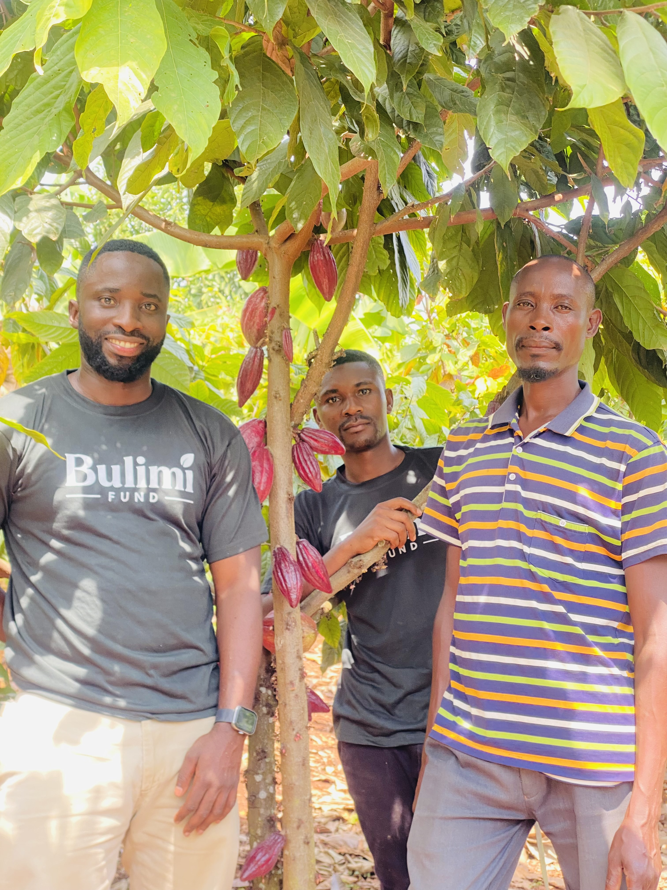

Every step is designed to build farmer capability and create a dependable route from the nursery bed to the sale of quality dried cocoa beans.

We register farmers through parish-level groups, confirm that each farmer can dedicate at least one acre, map proposed plots and assess basic suitability, access and land-use safeguards.
Farmers learn cocoa production fundamentals and receive practical guidance on land clearing, shade planning, planting-hole preparation, soil and water management and farm records.
Bulimi manages nursery beds to produce high-quality cocoa seedlings, coordinates delivery for planting, supports correct field establishment and plans gap filling where required.
Field teams provide continuing advice on mulching, pruning, shade, soil nutrition, sanitation, pest and disease management, safe input use and farm progress.
As farms produce, Bulimi purchases quality dried cocoa beans from participating farmers, consolidates volumes and applies clear quality requirements.
Aggregated cocoa is sold to credible exporters, creating a route to market and greater opportunity to negotiate through organized volume, quality and traceability.
Bulimi's model is built on partnership. Farmers who join make the following commitments:
Dedicate at least one suitable acre and demonstrate the right to use the land.
Attend training, prepare the plot and follow agreed establishment guidance.
Care for seedlings, maintain records and allow agreed extension visits.
Follow safe, responsible farm and post-harvest practices.
Participate in their local Bulimi farmer group and communicate challenges early.
If you are a farmer in a current Bulimi operating area and can dedicate at least one acre to cocoa, register your interest today.
Register Interest